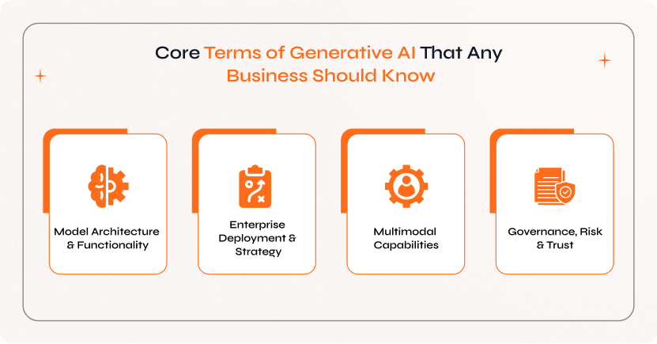
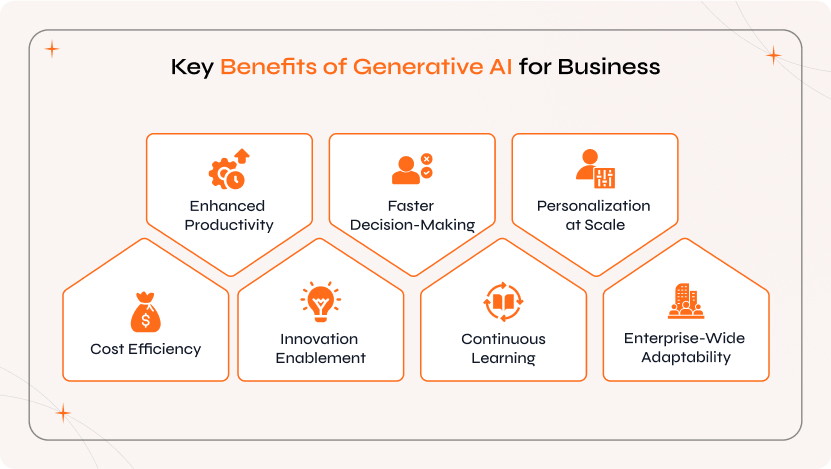
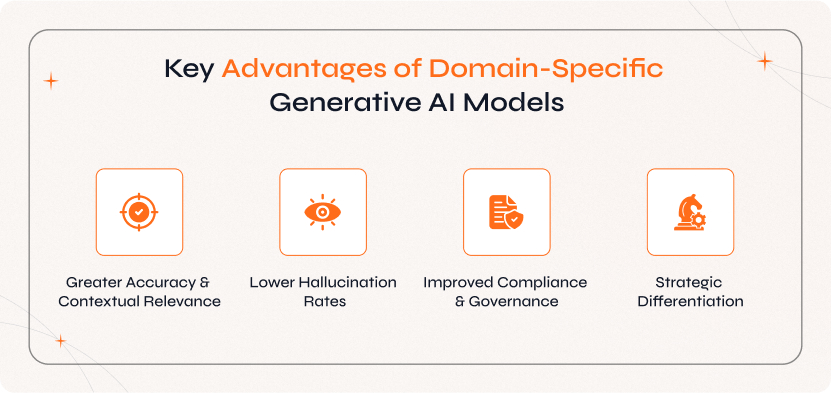
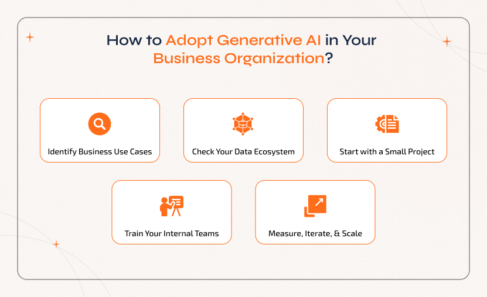
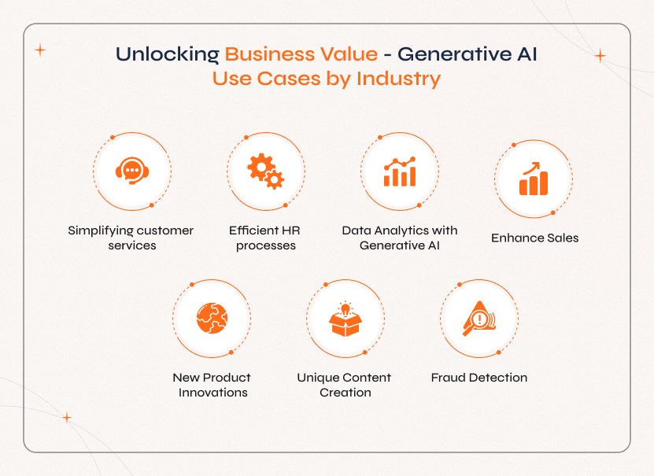

Generative AI has become a buzzword in the tech world recently. It refers to programs that can use existing content such as text, audio files, or images to create new content. According to IBM's 2022 Global AI Adoption Index, generative AI has entered the business world, with a remarkable 35% of companies incorporating it.
This rapidly evolving field is revolutionizing business operations by enabling companies to solve complex problems. It enables computers to learn the underlying pattern associated with the input and then use it to generate similar content. According to a report, 30% of manufacturers will increase product development efficiency by 2027. Generative AI in 2022 has many applications that have emerged as a savior in various fields.
Generative AI tools, including ChatGPT, analyze large volumes of data to generate exclusive insights that traditional methods fail to deliver promptly. From content creation automation to supply chain optimization and improved customer service, generative AI for business has far-reaching implications. By combining machine learning and natural language processing, generative AI tools enable businesses to make better-informed decisions, optimize their operations, and increase their profits.
Generative AI is no longer an experimental technology in 2025. From marketing automation to IT operations, using AI to solve business problems is now a strategic priority for competitive enterprises. It is becoming a core concept for enterprise transformation. By leveraging large language models (LLMs) and advanced transformer architectures, organizations can automate complex, time-consuming workflows, generate context-rich content, build adaptive predictive systems, and deliver multi-modal outputs at scale. This makes generative AI one of the most transformative and powerful artificial intelligence applications for business today.
Unlike conventional AI solutions that are limited to classification or regression tasks, generative AI actively creates new data, insights, and assets to unlock measurable business value. For enterprises, this translates into accelerated innovation cycles, reduced operational costs, and the ability to scale decision-making with precision and speed.
What is Generative AI & Why It Matters for Modern Enterprises?
Generative AI refers to advanced machine learning models that include large language models (LLMs) and transformer architecture, which generate human-like content, designs, or decisions autonomously. Its key importance lies in its ability to:
- Produce high-quality outputs at scale
- Reduce time-to-market for products and campaigns
- Enable decision-making driven by real-time, synthesized insights
For businesses, generative AI isn't just about automation—it's about achieving scalability, competitive agility, and sustainable growth. This makes generative AI an essential part of modern enterprise software and digital transformation strategies.
Core Terms of Generative AI That Any Business Should Know
To leverage generative AI for business success, it is essential to understand the foundational terms that underpin the technology. Here are the key concepts every decision-maker should be familiar with when evaluating generative AI software or platforms

The following terms are used when building or choosing AI tools for business. They help explain how generative models work and how scalable or customizable they are for business use, such as chatbots, automation, and content generation.
a. Large Language Model (LLM)
It is a powerful AI model trained on large volumes of text data, enabling it to generate human-like responses, automate conversations, streamline documentation, and build intelligent generative AI business applications.
b. Transformers
This is a deep learning architecture that allows AI to understand context across long text sequences, making it ideal for tasks like translation, summarization, and code generation. It is a foundational component of many enterprise generative AI tools & solutions.
c. Fine-Tuning
It is the process of customizing a pre-trained model using your company's exclusive data to ensure the outputs are accurate, domain-specific, and aligned with your business goals.
d. Token
It is a piece of text, such as a word, subword, or character, that AI models process. Token limits affect how much input or output a model can handle.
e. Inference
The actual process of generating output from a trained model based on input data. This happens during real-time use.
The following terms are used for fine-tuning AI for specific business tasks, ensuring fast response times in apps, and boosting accuracy in customer service or internal tools. They are crucial for integration, optimization, and real-time performance.
a. Prompt Engineering
It is the practice of crafting effective inputs or prompts to guide AI models towards specific, high-quality outputs. It is crucial for accuracy and relevance.
b. Zero-Shot Learning
It is the AI's ability to perform tasks it was not explicitly trained on by generalizing from related knowledge.
c. Few-Shot Learning
This is the AI model's ability to perform tasks after being shown only a few examples, enhancing the model's adaptability to niche business needs.
d. Retrieval-Augmented Generation (RAG)
It is a technique in which the AI model pulls related documents from a database in real-time to improve factual accuracy and reduce hallucinations.
e. Embedding
This is the process of converting words, images, or other forms of data into numerical vectors so that AI models can understand the relationships between different concepts.
f. Latency
The time it takes for an AI model to respond after receiving a prompt. It is important for real-time applications like chatbots or AI agents.
This is an important term needed for businesses working with more than just text. For instance, an e-commerce business may want AI to process product photos (image modality) and answer questions using text modality.
a. Multimodal AI
These are advanced models that can process and generate multiple data types such as text, images, videos, and audio. Thus, they enable more dynamic, cross-functional business applications.
b. Modality
This is a type or form of input or output data such as text, images, audio, or video. Each modality represents a unique way AI processes and understands the world.
This is essential for businesses concerned with compliance, brand safety, and decision accuracy.
a. Hallucinations
There may be cases where AI provides content that sounds real but is factually incorrect. Recognizing and mitigating these errors is vital for enterprise reliability.
Adopt Generative AI for Business to cut manual tasks,
reduce errors & make better decisions.
Key Benefits of Generative AI for Business
Here are the most measurable benefits of generative AI for business, especially when aligned with real-world operations.

1. Enhanced Productivity – Generative AI automates tasks like report creation, freeing teams to focus on strategy.
2. Faster Decision-Making – With real-time data insights, generative AI drives quicker, informed business decisions. Thus, enabling AI solutions for business challenges across departments.
3. Personalization at Scale – It can generate tailored marketing campaigns and product recommendations, delivering highly contextual messaging and user experiences, powered by enterprise-grade generative AI tools at scale.
4. Cost Efficiency – Generative AI reduces operational overhead via automation and intelligent resource use.
5. Innovation Enablement – Generative AI supports rapid prototyping, creative content, and product design.
6. Continuous Learning – Generative AI models improve over time and adapt to changing business data.
7. Enterprise-Wide Adaptability - Generative AI integrates into your existing CRMs, ERPs, and business intelligence platforms. Thus, enhancing business operations with AI-driven insights.
Why Domain-Specific Models are Critical for Enterprise Success
While generic AI models offer a broad experience, they often lack the precision required for enterprise-grade performance. Domain-specific models are fine-tuned using the proprietary data of organizations and deliver better outcomes by aligning with your unique generative AI business operations, goals, and processes.

1. Greater Accuracy & Contextual Relevance
They are trained on internal data and, thus, these models are capable of understanding your terminology, workflows, and customer expectations.
2. Lower Hallucination Rates
These models can be tailored to align with industry-specific regulations like HIPAA, PCI-DSS, or GDPR. With domain-specific inputs, AI produces more reliable, factual, and context-aware outputs.
3. Improved Compliance & Governance
These models can be tailored to align with industry-specific regulations like HIPAA, PCI-DSS, or GDPR.
4. Strategic Differentiation
These models help unlock insights and automations unique to your business, gaining a competitive edge.
A Real-World Example: A logistics company fine-tuned its generative AI model using historical delivery and route data. As a result, they achieved highly accurate predictions of shipping delays, outperforming off-the-shelf AI tools that missed industry context. This way, it is showcasing how companies are using generative AI to improve supply chain resilience.
Responsible AI Adoption - Mitigating Risk in Enterprise Generative AI
Although generative AI unlocks powerful business capabilities, adopting it without a clear strategy can expose enterprises to serious risks. Thus, any responsible AI strategy must proactively address the following challenges:
| Risk | Description | Mitigation Strategy |
|---|---|---|
| Data Privacy | Sensitive enterprise or customer data may be exposed during model training or use. | Enforce encryption, role-based access, and secure data storage. |
| IP Infringement | AI trained on unlicensed or third-party data can unintentionally replicate copyrighted content. | Use only licensed, proprietary, or open-source datasets. |
| Bias in Outputs | AI can generate biased or discriminatory results based on skewed training data. | Conduct regular bias audits and diversify training datasets. |
| Hallucinations | AI may produce content that is factually incorrect but appears plausible. | Implement human-in-the-loop validation and retrieval-augmented generation (RAG). |
| Regulatory Gaps | Rapid deployment may violate industry regulations or compliance standards. | Align with frameworks like GDPR, HIPAA, and SOC 2 during implementation. |
With more and more organizations starting to invest in enterprise generative AI, governance must evolve in relevance to technological innovation.
How to Adopt Generative AI in Your Business Organization?
Adopting generative AI into business requires a strategic, step-by-step approach that minimizes risk and maximizes ROI. Here is how the enterprise sectors are doing it:

1. Identify Business Use Cases
The very first step is to look for everyday tasks in your business that are repetitive, time-consuming, or content-heavy. The common areas for AI for enterprise transformation may be anything like customer emails, document writing, or reports.
2. Check Your Data Ecosystem
Evaluate existing data for quality, accessibility, compliance, and relevance. Ensure your data is clean, organized, and safe to use. This is because when the data is good, the delivered AI results will be better.
3. Start with a Small Project
Instead of launching an entire project, it is better to start with a low-risk pilot project in a controlled environment to validate results, gather feedback, and fine-tune your approach before full-scale deployment.
4. Train Your Internal Teams
During this stage, training for the employees is provided to manage, interpret, and collaborate with AI tools effectively. Building AI awareness ensures smoother adoption across departments.
5. Measure, Iterate, & Scale
Now, start tracking the key performance indicators (KPIs) like productivity gains, error reduction, or turnaround time. These insights are then used to expand AI capabilities into more complex or mission-critical operations.
By following these steps, businesses can safely introduce generative AI solutions for business that scale with confidence.
Unlocking Business Value - Generative AI Use Cases by Industry
Find out how industry leaders are using generative AI to automate tasks, personalize experiences, & unlock new revenue streams, everything tailored to their unique business needs.

Customer service is a crucial area where generative AI tools like ChatGPT can solve complex business issues. Chatbots powered by ChatGPT can supply customers with fast and accurate responses to their questions and enhance the prevalent customer experience. Customers can also be given tailored advice based on their purchase history and preferences.
For example, a retailer powers ChatGPT to build a chatbot that helps customers find products, answer inquiries, and process orders. Chatbots can be programmed to recognize and resolve customer objections and issues to provide timely solutions and customer happiness.
Also, a healthcare provider brawniness deploys a ChatGPT-powered chatbot that can assist patients in organizing appointments, deliver details about medical practices, and answer health-related queries. This may help healthcare providers simplify their processes, decrease wait times, and enhance patient results.
Artificial intelligence tools like ChatGPT can significantly support corporate HR functions. Via natural language processing and machine learning methods, ChatGPT can automate redundant HR tasks while delivering precise and quick responses to staff queries.
For example, companies can leverage the ability of generative AI to make a virtual HR assistant. This virtual assistant can assist employees with tasks like organizing leaves, delivering benefits, and instructing new employees on the company. Moreover, the chatbot can offer tailored employment product suggestions to employees based on their skills and goods, thereby enhancing employee concentration and retention.
Additionally, ChatGPT can find qualified candidates for vacant positions and schedule interviews to back up skills by scrutinizing resumes and job descriptions. It will help HR departments to save time and increase the quality of recruitment.
Generative AI technology in enterprises offers a considerable advantage in data analytics by discovering hidden patterns and trends that elude human perception. AI's ability to uncover such insights allows businesses to identify new areas of growth, optimize operations, and increase the satisfaction of their customers.
Generative AI's sentiment analysis capabilities serve as a great use case in data analytics. Generative AI tools like ChatGPT can analyze social media data to identify consumers' attitudes toward a brand, product, or service. Businesses can leverage the benefits of generative AI with this information. With the help of this data, they can refine their marketing strategies, develop a deeper understanding of customers, and increase customer satisfaction.
Additionally, generative AI tools can analyze large amounts of data and detect potential vulnerabilities. Such analytical insights offer businesses using generative AI the ability to proactively identify and address potential problems before they escalate.
Many organizations use generative AI for the success of their business to increase their sales. Generative AI is gaining importance in the business world as a means to increase sales and remain competitive. A specific application of this technology involves the use of generative language models to create personalized product descriptions that meet customers' individual needs and preferences. Through analysis of customer data and behavior, generative AI can create unique and compelling narratives.
Another way to put generative AI technology to good use in business is price optimization. By analyzing market trends, consumer behavior, and competitors' prices, generative models can generate appropriate prices for products or services. It allows businesses to maximize revenue while providing value to customers.
Also, companies that need help with customer segmentation and targeted marketing campaigns can use generative AI for business. By scrutinizing customer data, generative models can discover patterns and create targeted campaigns that appeal to specific customer segments.
New product development is another substantial use of generative AI for business. Developing innovative products and accelerating the design process can be complex business problems for many corporations. However, there are creative methodologies to deal with these obstacles, one of which is through the use of artificial intelligence systems.
By exploiting AI, enterprises can quickly examine large amounts of data and produce optimized designs based on specific parameters. Which will significantly reduce the duration and cost of product development while ensuring quality and performance.
For example, in the manufacturing industry, AI-powered design tools can scrutinize various design constraints such as weight, strength, and material usage to create optimized designs for products such as car parts, aircraft components, and more. Therefore, new product development is one of the most exciting generative AI business use cases.
Developing high-quality content is one of the crucial part and time-consuming tasks in the corporate world, whether it's product reports, promotional materials, or even complete articles. Companies can leverage generative AI technology in business in such cases to make acceptable quality content within a fixed time.
Using technologies like natural language processes and machine learning algorithms, generative AI tools can assess existing ranges and develop new, high-quality content that fulfills distinct criteria. This may contain references such as tone, style, and target audience.
In complement to saving time and resources, this method will increase the overall quality and consistency of content. This is particularly helpful in sites like e-commerce where product definitions and reviews play a crucial role in driving sales.
Companies gear up their business by implementing generative AI tools to solve complex fraud detection problems. These tools are powerful for proactively detecting and preventing more fraudulent activities.
One beneficial application of using generative AI for business is in the field of fake ID document identification. These tools also rapidly scan identity documents like passports, driving licenses, and more to prevent fraudulent activity.
Additionally, companies can use AI-powered tools to identify payment fraud. These tools scrutinize payment data, identify suspicious transactions or patterns, and empower businesses to take appropriate action and prevent fraudulent activity.
Another area where AI-powered fraud detection tools can serve is fake accounts detection. These tools scrutinize user behavior and data to detect fake accounts and prevent them from accessing the platform or initiating fraudulent transactions. Generative AI technology in business offers fraud detection systems that can protect your firm and customers from financial loss and reputational damage.
Why Businesses Choose Sparkout Tech as Their Generative AI Development Company?
At Sparkout Tech, we go beyond basic AI integration—we build tailored enterprise-grade generative AI solutions that align with your business goals, industry requirements, and data strategy. For the following reasons, leading business organizations partner with us for their generative AI transformation:
1. Domain-Specific Expertise
We fine-tune models using your proprietary data, ensuring high accuracy, contextual relevance, and competitive differentiation across functions.
2. End-to-End AI Services
From ideation to data readiness, deployment, and post-launch support, we manage the full AI lifecycle under one roof.
3. Cross-Industry Solutions
No matter whether it's finance, eCommerce, manufacturing, or legal, our solutions are custom-built for real-world challenges across domains.
4. Enterprise-Grade Security & Compliance
We implement robust governance frameworks in adherence to GDPR, HIPAA, and SOC 2 standards to keep your data safe and auditable.
5. Proven Track Record
Our generative AI delivers results at scale, as we carry out successful deployments across AI chatbots, predictive models, content automation, and AI-powered agents.
6. Flexible Integration Models
Our generative AI systems work with your existing CRMs, APIs, and data warehouses, thus reducing friction and accelerating adoption.
Our proprietary development approach ensures that any business is not just integrating technology, but are launching a high-performance generative AI product tailored to your operations.
As a trusted Generative AI Development Company, we build secure, scalable AI systems tailored to your business.